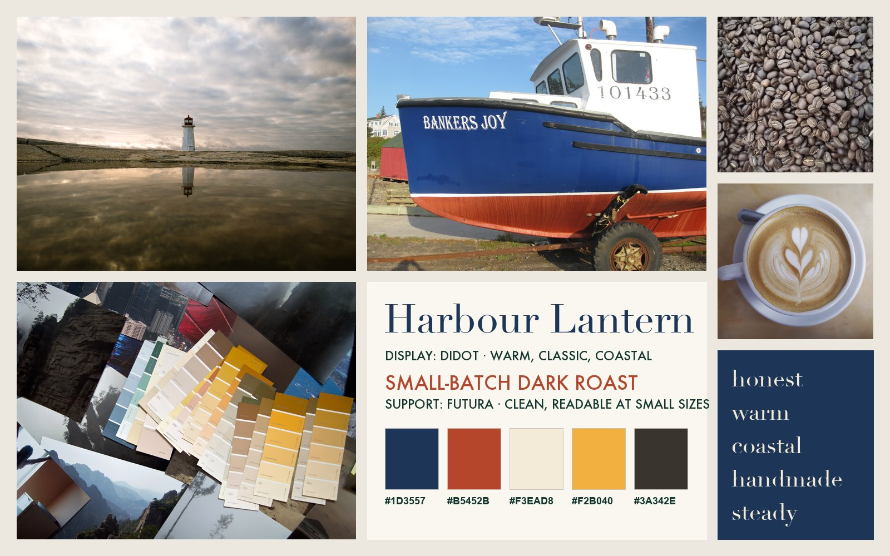
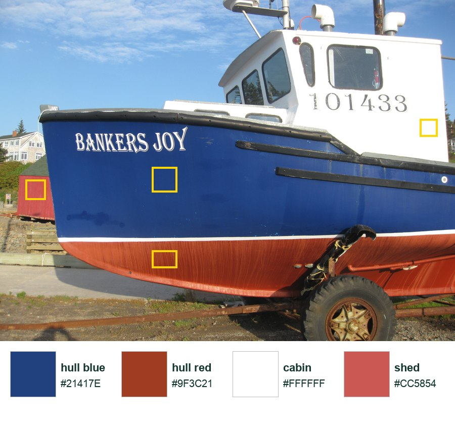
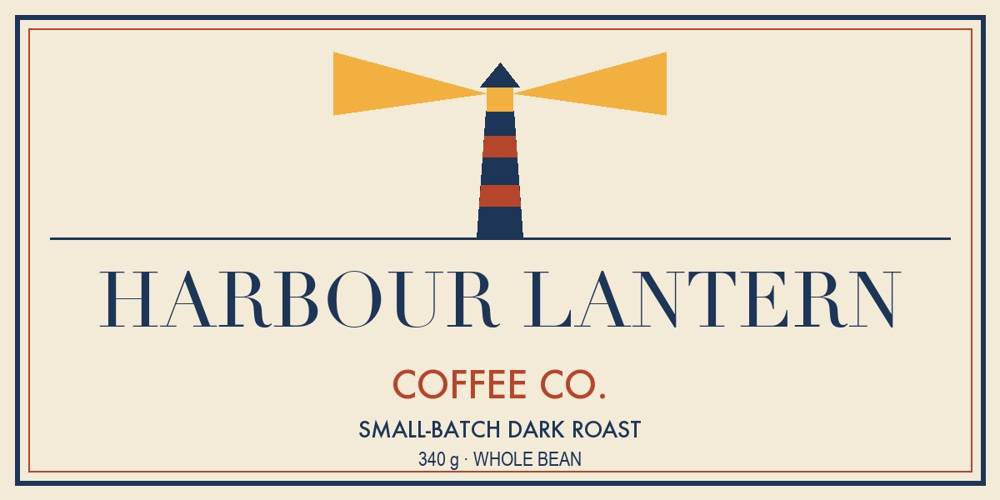
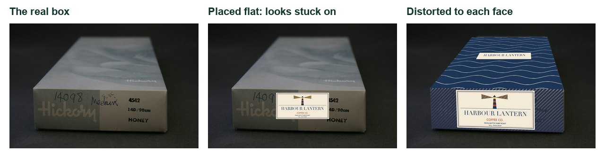
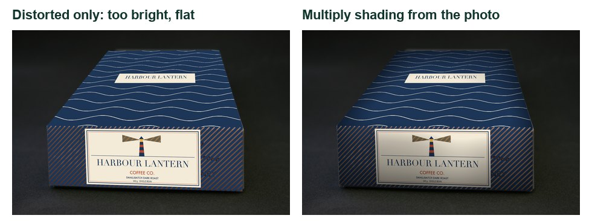
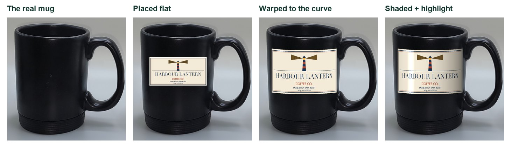
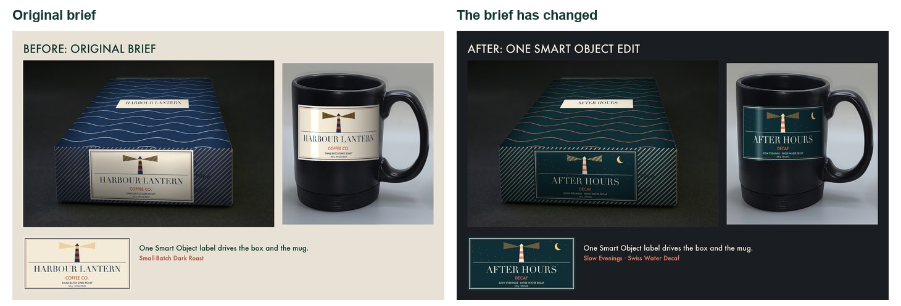

Demo brand, made from openly licensed photos (credits in Sources). You design your own brand.
One label. Every mock-up.
You are a junior designer at a packaging studio. The client wants to see the label on real products before paying for a print run, and they will change their mind.
My supports
Turn on any help you want. Your teacher may have set some for you. They change how the guide helps, not what is assessed.
Client brief
A small roaster needs a label that works on a box and a mug.
MM12 client: a new small-batch coffee roaster (you invent the name) wants a label for its whole-bean box and a matching café mug. The audience is adults who care where their coffee comes from. You will present the label on both products as a mock-up board. Then the client will change the brief, and you will adapt it in one lesson.
COM11 client: the Snowy Village gift shop wants its village identity on a souvenir box and mug, using the identity you built this sprint.
You will hand in
BriefBoard v1 (original brief) and v2 (changed brief) as JPG
Layered PSD with one LABEL Smart Object and its copies
A print run of boxes and cups can cost thousands of dollars, so packaging studios show clients photo-real mock-ups first. They build them from product photos and Smart Objects, which is why a studio can turn around a new flavour, a seasonal edition or a bilingual version in an afternoon. A1
Brands change constantly: limited editions, fundraisers, accessibility updates, new markets. In Canada, food packaging usually needs English and French. D1 The designer who can adapt without starting over keeps the client.
Direction, colour, type, and the container that holds them.
Mood board
A mood board sets the feeling before the design: photos, textures, colours and type that match three or four words. The client approves the direction, not the details.
Principles of design on a label
Hierarchy: the name is read first, then the product, then the details. Contrast: size, weight and value make that order obvious. Alignment: one strong line (centre or left) holds everything together. Repetition: the same colours, marks and fonts on every product make a brand recognisable.
Colour
Sample a palette from photos that feel right, then tune it. Use one dominant colour, a secondary colour and a small accent (60-30-10). Text needs strong value contrast against its background, not just a different hue. Colours carry associations (warm and daytime, cool and night-time), so a changed audience often means a changed palette.
Typography
Pair a characterful display font for the name with a plain support font for details. Check the smallest text at the real size: on a mug, a label is only about 8 cm wide.
Smart Objects
A Smart Object is a container: transforms such as Distort and Warp happen on the outside, and the layers inside stay editable. Copies made with Ctrl/Cmd+J share their contents, so editing one updates them all. (Studios also use linked Smart Objects that point to one shared file across many documents.)
What this assesses
Skills you will show.
Skill (registered ID)
Where you show it
Smart Objects · PS-SMO-01
Steps 3 and 7 (one edit updates every copy)
Distort / Perspective / Warp · PS-TRN-02
Steps 4 and 6
Adjustment layers · PS-ADJ-01 · Colour control · PS-COL-01
Primary achievement evidence: the client change (step 7) and the live Smart Object edit in the defence (step 8). These are the Sprint 2 independent evidence for MM12 (mm12-26-s02) and COM11 (com11-26-s02). Guided steps, supports and the mood board are practice, recorded separately from achievement.
Before a designer touches a label, the client signs off a mood board. Then the label is built once, as a Smart Object, so every mock-up can share it.
TODAYMood strip (10 min), palette and fonts (10 min), label as a Smart Object (25 min), label on the box (15 min). Save as BriefBoard_YourName.psd.
01
Read the brief and build a mood strip
IN SHORTThree feeling words; five images; group MOOD.
READ ALOUD
DOCUMENT: Brief_Starter_Pack.zip · mood photos SELECT: Five images that feel like the brand TOOLS / ROUTE: File › New · File › Place Embedded
Read the client brief in Start. Write three words for how the brand should feel (for example: honest, warm, coastal).
In Photoshop choose File › New, 1600 × 1000 px, 72 ppi, and name it BriefBoard_YourName.
Choose File › Place Embedded and bring in five images from the starter pack or your own photos. Press Enter after each.
Scale each image with Ctrl/Cmd+T into a tidy grid along the top half. Leave the bottom half empty for palette, fonts and mock-ups.
Add your three words with the Type tool (T). Group the mood layers (Ctrl/Cmd+G) and name the group MOOD.
COM11 route: build the mood strip for your Snowy Village identity from Sprint 2. Use winter, village and craft images.
STEP CHECKLIST
GLOSSARY
Mood board: A collection of images, colours and type that sets a visual direction before design starts
Place Embedded: Brings a file in as a Smart Object stored inside your document

A finished mood board for the demo brand Harbour Lantern Coffee Co.: coastal photos, coffee textures, a type specimen, a palette and five feeling words.
WHYA mood board lets the client agree a direction before hours go into design. It is cheaper to change a picture than a finished label.
CHECKFive images, three feeling words and a grouped MOOD layer. Someone who reads only the board could guess the kind of product.
FIXImages too big? Hold Shift+Alt/Option while scaling from a corner. Nothing fits the brand? Use your own phone photos of textures around the school.
WORKED EXAMPLE · DIFFERENT OBJECTThe demo mood board mixes a lighthouse at dusk, a painted fishing boat, beans, latte art and paint chips: “coastal, handmade, warm”.
STRETCH (AFTER THE CHECK PASSES)Add one image that shows what the brand is NOT (a clash) and label it. Clients find this very useful.
Method basis: A5. Values and sequence are authored for this project.
02
Sample a palette and choose two fonts
IN SHORTSample, save swatches, label hex codes, choose two fonts with reasons.
READ ALOUD
DOCUMENT: Your MOOD group SELECT: Four or five colours · one display font · one support font TOOLS / ROUTE: Eyedropper (I) · Swatches panel · Type tool
Choose the Eyedropper (I). In the options bar, set Sample Size to 5 by 5 Average so one pixel of noise does not fool it.
Click a strong colour in a mood photo. In the Swatches panel click Create new swatch. Repeat for four or five colours.
Draw a square for each swatch with the Rectangle tool (U) below the mood photos and write its hex code next to it.
Mark one colour as the dominant colour, one as the secondary and one as the accent (about 60-30-10).
Type the brand name in a display font and one line in a support font. Write why each font fits your three words.
COM11 route: sample from your village identity tile so the packaging matches the signs you made.
STEP CHECKLIST
GLOSSARY
Swatch: A saved colour you can reuse exactly
60-30-10: A balance of dominant, secondary and accent colour
Display font: A characterful font for large text such as a name
Support font: A plain, readable font for small information

Sampling a palette from a real photo: each yellow box is an Eyedropper sample, averaged over 5 × 5 pixels.
WHYColours sampled from real photos already belong together. Tuning them afterwards (darker navy, warmer cream) turns a photo palette into a brand palette.
CHECKFour or five labelled swatches with hex codes, a 60-30-10 plan, and two fonts with one reason each.
FIXAll swatches look muddy? Sample from lit areas, not shadows. Fonts fighting? Pair one expressive display font with one plain sans serif.
WORKED EXAMPLE · DIFFERENT OBJECTThe demo sampled hull blue #21417E and hull red #9F3C21, then deepened them to #1D3557 and #B5452B so small text stayed readable on cream.
STRETCH (AFTER THE CHECK PASSES)Check your text/background pair for contrast with a free contrast checker and aim for 4.5:1 or better.
Method basis: A5. Values and sequence are authored for this project.
03
Design the label and make it a Smart Object
IN SHORTThree sizes of text, one mark, a border; convert to Smart Object named LABEL.
READ ALOUD
DOCUMENT: BriefBoard_YourName.psd SELECT: All the label layers TOOLS / ROUTE: Layer › Smart Objects › Convert to Smart Object
Draw a 1200 × 600 px rectangle filled with your background swatch. This is the label size.
Add the brand name (largest), the product line (medium) and the weight or details (smallest). Keep a clear order of reading.
Add one simple mark or icon made with shapes, and a thin border inset from the edge. Align everything to a centre or left line.
Select every label layer in the Layers panel, right-click and choose Convert to Smart Object. Name it LABEL.
Double-click the LABEL thumbnail once to see that the layers are still inside and editable. Close that tab with Ctrl/Cmd+W.
COM11 route: your label can be the village name, a crest or icon from your identity, and one line such as “Handmade in Snowy Village”.
STEP CHECKLIST
GLOSSARY
Smart Object: A layer that holds other layers or files inside it and protects them from destructive changes
Hierarchy: The order in which the eye reads information, set by size, weight, colour and position

The demo label: name, line and details in three clear sizes, one icon, one inset border, all aligned to the centre.
WHYA Smart Object is a container. You can squash, bend and scale it on the outside while the original layers stay sharp and editable inside.
CHECKA readable label with three levels of hierarchy, and one LABEL Smart Object in the Layers panel (it shows a small page icon).
FIXText too close to the edge? Keep at least 40 px of margin. Can’t convert? Make sure you selected layers, not a group of one.
WORKED EXAMPLE · DIFFERENT OBJECTA student’s first label had six sizes of text. Reducing it to three made the brand name the obvious first read.
STRETCH (AFTER THE CHECK PASSES)Make a second, tall version of the label for a cup sleeve inside the same Smart Object as a separate layer group.
Method basis: A1. Values and sequence are authored for this project.
04
Put the label on the box with Distort
IN SHORTPlace the box, duplicate LABEL, Distort each corner onto the face.
READ ALOUD
DOCUMENT: box.jpg from the starter pack SELECT: The box’s front face and top face TOOLS / ROUTE: Edit › Transform › Distort
Choose File › Place Embedded and bring box.jpg into the bottom half of your board. Scale it to fit.
Select LABEL and press Ctrl/Cmd+J to duplicate it. Drag the copy above the box and name it LABEL box.
Choose Edit › Transform › Distort. Drag each of the four corner handles exactly onto a corner of the box’s front face. Press Enter.
For the top face, make a simple pattern layer, convert it to a Smart Object, and Distort it onto the top face the same way.
Zoom to 200 % and nudge corners until no background shows at the edges and the label follows the box’s lines.
COM11 route: put your village label on the box as a gift-shop souvenir box.
STEP CHECKLIST
GLOSSARY
Distort: A transform that moves each corner freely
Perspective: Parallel edges appearing to meet in the distance

Left: the real box. Middle: the label placed flat, which looks stuck on. Right: each face distorted to the box’s own lines.
WHYIn a photo, parallel edges meet towards a vanishing point. Distort lets the label follow the same perspective, so it reads as printed on the box.
CHECKThe label corners sit on the face corners, the label’s edges run parallel to the box’s edges, and nothing hangs off.
FIXLabel blurry? You used a copy that was rasterized: undo and duplicate the Smart Object instead. Distort greyed out? Select the layer, not the group.
WORKED EXAMPLE · DIFFERENT OBJECTWorked on a different object: a student distorted a poster onto a school bulletin board photo, pinning each corner to a thumbtack.
STRETCH (AFTER THE CHECK PASSES)Add a second box turned the other way and distort a copy of LABEL onto it. Only the corners change.
Method basis: A2. Values and sequence are authored for this project.
A mock-up only convinces a client if it picks up the photo’s light. Then comes the real test: the client changes the brief and you have one lesson.
TODAYShading (10 min), mug warp (15 min), client change on your own (25 min), export and defend (15 min).
05
Borrow the photo’s light with Multiply
IN SHORTDuplicate, blur, Multiply, clip, balance with Curves.
READ ALOUD
DOCUMENT: BriefBoard_YourName.psd SELECT: The box photo’s own light and shadow TOOLS / ROUTE: Duplicate layer · Gaussian Blur · Multiply · clipping mask
Duplicate the box photo layer (Ctrl/Cmd+J) and drag the copy above LABEL box.
Choose Filter › Blur › Gaussian Blur with a radius of about 30 px, so the old printing disappears and only the light remains.
Set the copy’s blend mode to Multiply and Alt/Option-click the line between it and LABEL box to clip it to the label.
Too dark? Add a Curves adjustment clipped above it and lift the middle until the label’s brightest part matches the box.
Repeat for the top face. Compare before and after by clicking the eye icon on the shading layer.
STEP CHECKLIST
GLOSSARY
Multiply: A blend mode that darkens using the layer’s dark values; white has no effect
Clipping mask: A layer that shows only where the layer below it has pixels

Left: distorted only, flat and too bright. Right: the photo’s own light multiplied onto the label.
WHYMultiply keeps dark areas and ignores white. Using the photo’s own blurred light makes the label darken exactly where the box is in shadow.
CHECKThe label’s far edge is slightly darker than its near edge, just as the real box is, and the old print does not show through.
FIXOld print still visible? Blur more. Label grey all over? Lift the Curves midpoint or lower the shading opacity to about 70 %.
WORKED EXAMPLE · DIFFERENT OBJECTThe same trick puts a logo on a T-shirt: a blurred copy of the shirt, Multiplied, makes the logo follow the folds.
STRETCH (AFTER THE CHECK PASSES)Add a soft white highlight on a new layer set to Screen where the light hits the box edge.
Method basis: A4. Values and sequence are authored for this project.
06
Wrap the label round the mug with Warp
IN SHORTDuplicate LABEL, Warp as Cylinder, shade the far side, add one highlight.
READ ALOUD
DOCUMENT: mug.jpg from the starter pack SELECT: The black mug’s curved body TOOLS / ROUTE: Edit › Transform › Warp › Cylinder
Place mug.jpg on your board. Duplicate LABEL again (Ctrl/Cmd+J) and name it LABEL mug.
Scale it to fit the flat front of the mug with Ctrl/Cmd+T.
Choose Edit › Transform › Warp. In the options bar set Warp to Cylinder (older versions: Arc, Bend about −10 %, or drag the grid).
Drag the cylinder handles until the label’s top and bottom edges curve like the mug’s rim and the sides squeeze in. Press Enter.
Clip a black-to-transparent gradient on Multiply to darken the side turning away from the light, and paint one thin soft white highlight on a Screen layer.
COM11 route: the mug becomes a village souvenir mug; keep the village mark readable at the curve.
STEP CHECKLIST
GLOSSARY
Warp: A transform that bends a layer along a grid
Screen: A blend mode that lightens; black has no effect

The mug, then the label placed flat, warped to the curve, and finally shaded with a highlight like the one on the real mug.
WHYRound objects squeeze their edges and curve their lines. Without the warp and the side shading, the label looks like a sticker floating in front.
CHECKThe label edges follow the rim’s curve, the sides are narrower than the middle, and one side is darker.
FIXNo Cylinder option? Use Arc with a small negative bend, then Distort the sides inward slightly. Highlight too strong? Lower its opacity to about 40 %.
WORKED EXAMPLE · DIFFERENT OBJECTA student used the same warp to put a team logo on a water bottle, checking the curve against the bottle cap.
STRETCH (AFTER THE CHECK PASSES)Put the label on the white cup in the same photo. Its curve is different: match its rim.
Method basis: A3 · A4. Values and sequence are authored for this project.
07
The brief has changed: respond on your own
IN SHORTExport v1, read the card, edit inside LABEL once, check both, export v2, explain.
READ ALOUD
DOCUMENT: Client change card (from your teacher) · BriefBoard_YourName.psd SELECT: The LABEL Smart Object only TOOLS / ROUTE: Double-click LABEL · edit · Ctrl/Cmd+S
Save a copy of your finished board as BriefBoard_YourName_v1.jpg (File › Export › Export As). This is your “before”.
Read your client change card. Decide what must change in colour, type, words or mark, and what must stay so the brand is still recognisable. Write it in your decision log.
Double-click the LABEL thumbnail to open its contents. Make your changes there only. Save with Ctrl/Cmd+S and close the tab.
Check that LABEL box and LABEL mug both updated. Fix any shading or legibility problems the new colours cause.
Export the new board as BriefBoard_YourName_v2.jpg. Write three sentences: what changed, why it suits the new audience, and what you kept.
Card
The client says
1 · Evening decaf
“We’re launching a decaf for customers after 6 pm. Calm, night-time, still premium.”
2 · Summer cold brew
“Cold brew for teens and young adults. Bright and energetic, and it must read from 2 m on a café shelf.”
3 · Food bank fundraiser
“A school fundraiser edition. Add ‘Proceeds support the local food bank’ and use the school colours.”
4 · Easier to read
“Older customers can’t read the small text. Raise contrast and size without losing the brand.”
5 · Bilingual shelf
“We’re selling across Canada. The label needs English and French with equal prominence.” D1
COM11 route: cards are: Winter Carnival edition · Bilingual tourist shop version · Night market (the label must read under coloured string lights).
Independent work: the Coach and classmates may not make design decisions for you in this step. Your teacher may ask you to show the edit live.
STEP CHECKLIST
GLOSSARY
Instance: A copy of a Smart Object that shares the same contents
Client change: A new requirement that arrives after the design is underway

Before and after: one edit inside the LABEL Smart Object changed the box, the mug and the flat label together.
WHYDuplicated Smart Objects (Ctrl/Cmd+J) share the same contents. Edit one and every copy updates. That is why studios build mock-ups this way.
CHECKTwo exported boards and a decision log. Both mock-ups show the new label, it suits the card’s audience, and the brand is still recognisable.
FIXOnly one mock-up changed? That copy was made with New Smart Object via Copy, which breaks the link. Replace it with a Ctrl/Cmd+J duplicate of the edited LABEL.
WORKED EXAMPLE · DIFFERENT OBJECTWorked example on a different brand: a juice label changed from “Morning” to “After School”. The student kept the icon and layout, swapped the palette and rewrote the line.
STRETCH (AFTER THE CHECK PASSES)Respond to a second card in the same Smart Object as a separate layer comp, so the client can switch between both options.
Method basis: A1. Values and sequence are authored for this project.
08
Present and defend
IN SHORTExport, hand in, show a live edit, give colour and type reasons, reflect on Truck Ad.
READ ALOUD
DOCUMENT: v1 and v2 boards · Student OS SELECT: Your two boards and your Truck Ad TOOLS / ROUTE: Export As · Student OS hand-in · short conversation
Export both boards as JPG, long edge 1600 px, and your layered PSD. Name them as above.
Hand in the v1 and v2 boards, the PSD and the decision log through Student OS.
Be ready for a two-minute conversation with your teacher: show the LABEL Smart Object, change one word live, and show both mock-ups update.
Explain one colour decision and one type decision using your mood board and the client card.
Explain one decision from your Truck Ad that you would change now, using today’s vocabulary (hierarchy, contrast, repetition).
STEP CHECKLIST
GLOSSARY
Defence: A short conversation where you explain and justify your decisions
WHYA designer’s job ends with a decision the client understands. Defending choices with evidence from the brief is part of the craft.
CHECKFiles handed in and a short defence where you show a live Smart Object edit and give one colour and one type reason.
FIXNervous about the live edit? Practise it once with a partner: double-click, change a word, save, close.
WORKED EXAMPLE · DIFFERENT OBJECTA student defended a teal palette for the decaf card: “Teal reads as evening and calm on the mood board, and it keeps 7:1 contrast with the cream text.”
STRETCH (AFTER THE CHECK PASSES)Present both versions side by side as one slide and ask a classmate which audience each suits. Did they guess right?
Before you submit
Student QA.
Evidence conversation
Keep it short and specific.
SENTENCE FRAMESMy brand feels ___, which the ___ image shows. · I changed ___ because the new audience ___. · I kept ___ so customers would still recognise ___.
Mug vs cup.jpg · Викидим · CC0 · source. Processed as stated in each caption.
Roasted arabica coffee beans Minca.jpg · Roger Burger · CC0 · source. Processed as stated in each caption.
Two Hands Cafe latte art (Unsplash).jpg · Drew Coffman drewcoffman · CC0 · source. Processed as stated in each caption.
Photo collage, Montage, Color charts, Rostov-on-Don, Russia.jpg · Vyacheslav Argenberg · CC BY 4.0 · source. Processed as stated in each caption.
Box (AM 1996.111.15-4).jpg · Auckland War Memorial Museum Tāmaki Paenga Hira (object by Hickory) · CC BY 4.0 · source. Processed as stated in each caption.
Peggy's Cove Lighthouse (Unsplash).jpg · Tim Foster timberfoster · CC0 · source. Processed as stated in each caption.
Halls Harbour fishing boat.JPG · RobNS · Public domain · source. Processed as stated in each caption.
Figures marked Illustration are drawn, not screenshots. Step values are starting points authored for this project. Draft for teacher review; not yet classroom-piloted.